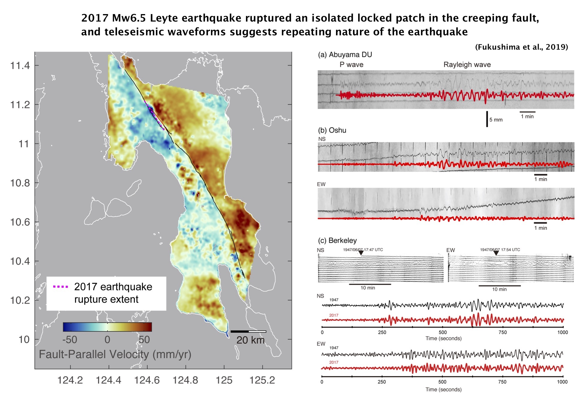

Publication List
My CV (PDF, English) contains a list of publications.
Expertise and Main Themes
Expertise:
Crustal Deformation (Geodesy, Seismology, Volcanology)
地殻変動（測地学、地震学、火山学）
Main Research Themes:
- InSAR (Synthetic Aperture Radar Interferometry): Detection of crustal deformation (coseismic deformation, small deformation around active faults, volcanoes, landslides etc). InSARを使った地殻変動検出
- Modeling of crustal deformation (quantitative interpretation): Analytical and numerical computation of crustal deformation, inverse problems, data analysis 地殻変動データのモデリング
- Making use of uncertain earthquake forecast information for disaster risk reduction 不確実性を含む地震予測情報の防災・減災への利用
Gallery of Research Outputs
Understanding earthquake occurrence mechanisms and seismotectonics through InSAR and modeling
InSARデータと精密モデリングによる地震発生機構・発生場の解明
A number of studies were done on estimating earthquake fault slip models using InSAR (and GNSS, if available) data.
These studies (and many other studies performed by researchers worldwide) found that heterogeneous slip distributions, rough surface ruptures, and branching of slips are quite general.
These findings obtained from the high-quality InSAR data that complexity of earthquake rupture is an ubiquitous feature.
Some related papers:
Fukushima et al., 2008;
Hashimoto et al., 2011;
Fukushima et al., 2013;
Feng et al., 2014)
Fukushima et al., 2018
Detection of fault creep
断層クリープの検出
By applying InSAR time-series analysis using many SAR images, we can detect small ground displacements of a few mm/year. In the study of the Philippine Fault, our study revealed that the fault creep stressed a locked portion along the fault and eventually led to occurrence of an Mw6.5 earthquake.
Related papers:
Fukushima et al., 2019

Modeling volcano deformation using InSAR
火山の地殻変動モデリング
For my Ph.D. thesis, I worked on the deformation associated with eruptions at Piton de la Fournaise volcano in the Reunion Island.
The satellite interferometry (InSAR) data clearly captured the deformation due to dike intrusions. I then used a method that combined a boundary element method (BEM) and a Monte-Carlo inversion algorithm to accurately estimate the shape and location of the dike intrusions, which led to unraveling the movement of magma associated with eruptions.
Related papers:
Froger et al., 2004 ;
Fukushima et al., 2005;
Peltier et al., 2008;
Fukushima et al., 2010
Another unique study was done on the Japanese volcanoes that deformed in response to the coseismic stress change due to the 2011 Great East Japan Earthquake. Some active volcanoes in the Tohoku region experienced subsidence possibly due to the presence of weak zones surrounding magma reservoirs.
Related papers:
Takada and Fukushima, 2013 ;
Takada and Fukushima, 2014
Using (uncertain) earthquake forecast in social countermeasures
地震の（不確実な）予測情報の社会利用
I am interested in how we can (or cannot) use uncertain earthquake forecast information in social countermeasures. Using such information is very challenging, but has a potential to reduce disaster risk in addition to basic countermeaures such as developing resistant buildings and infrastructures.
地震の（不確実な）予測情報の社会利用について、セコム科学技術振興財団の助成をいただいて研究を行っています。 詳しくは、下リンク先にある、地震学会２０１８年度秋季大会の発表スライドや、東北大災害研の勉強会成果・報告レポート集をご覧ください。
地震学会２０１８年度秋季大会発表スライド「地震防災における事前情報の役割と課題」（日本語）南海トラフ地震予測対応勉強会 成果・報告レポート集（日本語）
Seismic wave scattering in the laboratory
地震波の散乱の室内実験
For my master's thesis, I performed a laboratory study on seismic shear wave scattering. The work involved scanning rock samples and characterizing their heterogeneities, which lead to some collaborative studies.
Others その他
Mud volcanoes 泥火山
(
Fukushima et al., 2009;
Rudolph et al., 2013)
Land subsidence 地盤沈下
(
Arimoto et al., 2013;
Ishitsuka et al., 2014)